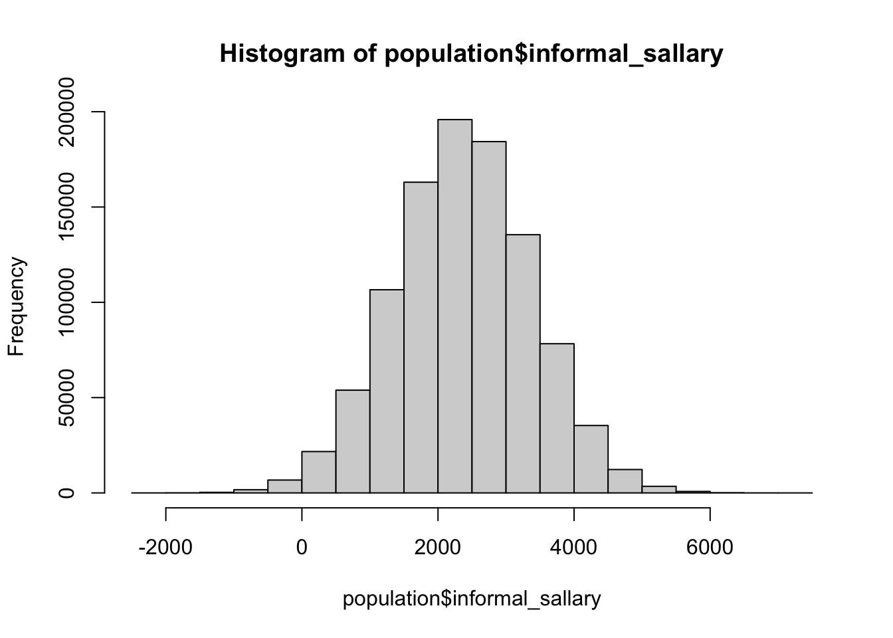

# definindo o tamanho da população
pop_size <- 1000000
set.seed(123)
population <- tibble(
# id do indivíduo
id = 1:pop_size,
# gerando os valores de salário informal, para uma população com média de 2375 e desvio-padrão de 1000
informal_sallary = rnorm(n = pop_size, mean = 2375, sd = 500)
)
# substituindo possíveis valores negativos por 0 (nã0 faz sentido um salário negativo)
population <- population |>
mutate(
informal_sallary = if_else(informal_sallary < 0, 0, informal_sallary)
)Motivação
Me lembro como se fosse hoje de uma das primeiras crises que tive quando comecei a estudar estatística pra valer: foi em uma aula de Inferência sobre parâmetros, estimadores e estimativas, que corria muito bem até o momento em que a professora disse “então, a média amostral é o melhor estimador da média populacional.”
Bom, eu não consigo imaginar como uma afirmação dessas reverbera em um aluno com a formação em alguma área de exatas… Mas, pra mim, que tive uma formação em biológicas/saúde, essa frase gerou uma sequência de pensamentos [e emoções]:
É óbvio que a média amostral é a melhor forma de estimar a média populacional… [aff 🙄]
Mas calma… se para calcular a média populacional, somamos todos os elementos e dividimos pelo N populacional, o jeito de calcular a média amostral não é somando todos os elementos da amostra e dividindo pelo n amostral? [a vida não é direta assim? 👀]
Tem algum outro jeito de estimar a média populacional que não seja usando a média amostral? [não, né?! 😬]
Para estimar parâmetros como a média, variância ou desvio-padrão de uma população, não bastaria simplesmente aplicar as mesmas fórmulas usadas para a população, mas utilizando os dados da amostra? [😱😱😱]
Todos os questionamentos que passaram pela minha mente foram angustiantes… Por um bom tempo eu nem conseguia organizar essas dúvidas de forma que pudesse formular as perguntas certas… Infelizmente, muitos professores de exatas têm pouca sensibilidade para explicar conceitos que, para eles, são óbvios. E, quando migramos de área, entender esses conceitos iniciais é essencial para construir uma base sólida para todos os outros mil conceitos que virão pela frente.
Depois de buscar diferentes professores, videoaulas e livros para entender essa afirmação [supostamente tão simples] feita pela minha professora de Inferência, percebi algo valioso: um dos melhores caminhos para consolidar um bom raciocínio em estatística é simular dados de uma população (ou seja, desenhar uma população com parâmetros conhecidos) e observar como as amostras extraídas dessa população se comportam. Quando conseguimos visualizar, de forma concreta, aquilo que antes era apenas um conceito abstrato, tudo começa a fazer mais sentido. E é exatamente essa a proposta deste post: explicar, de maneira visual e prática, alguns conceitos que tanto me angustiaram lá atrás. Vamos ver, a partir de uma população fictícia, como as definições de parâmetros, estimadores e estimativas se conectam.
Introdução
Antes de começar o mão na massa, vamos dar uns passos atrás e recapitular o objetivo da Inferência Estatística…
Imagine que você é líder de um país e precisa desenvolver políticas públicas voltadas ao trabalho informal. Para isso, entender alguns dados sobre como o trabalho informal se distribui pela população é essencial para orientar suas decisões e garantir que as medidas propostas sejam eficazes e bem direcionadas. Por exemplo, quantos habitantes do país possuem um trabalho informal? Quanto, em média, esses habitantes ganham mensalmente realizando atividades informais? O trabalho informal é, em geral, a principal atividade das famílias? Com as respostas dessas perguntas em mãos, fica mais fácil pra você, como tomador de decisão, saber para qual lado guiar as suas propostas sobre esse tema.
Então, para obter as respostas das perguntas acima, você tem duas possibilidades: a primeira consiste em entrevistar toda a população acerca das perguntas mencionadas. Essa saída não nos deixaria dúvidas sobre como o trabalho informal se distribui entre os habitantes do nosso país; contudo, é uma alternativa complexa: imagine o tempo e o custo que seriam gastos para entrevistar todos os habitantes do nosso país! A outra possibilidade consiste em selecionar uma amostra dessa população e realizar as entrevistas, reduzindo drasticamente o custo e o tempo demandados para obter os dados que podem nos ajudar na tomada de decisão. Todavia, uma amostra da população não é a população… E lembre-se: você, como líder de um país, precisa pensar em políticas públicas que vão ajudar todos os habitantes!
Então, como podemos, a partir de uma amostra, chegar em uma conclusão sobre a população? A resposta está na Inferência Estatística! De forma simplificada, a Inferência Estatística é o ramo da estatística responsável por tirar conclusões sobre uma população com base em informações extraídas de uma amostra. Dessa maneira, conseguimos estimar características de uma população utilizando somente um amostra, facilitando o processo de entendimento da população como um todo.
Como já disse acima, aprendi que para se entender conceitos abstratos em estatística, nada melhor do que simular uma população para visualizar como os conceitos teóricos se materializam em um exemplo concreto. Para isso, vamos continuar com o problema já estabelecido de que você é o líder de um país e precisa entender como a renda obtida por trabalhos informais se distribui ao longo da população. Começaremos por simular a população desse país da seguinte maneita: o país possui 1 milhão de habitantes com trabalho informal e a renda obtida pelo trabalho informal desses habitantes vem de uma distribuição normal com média em R$2375 e desvio-padrão de R$1000.
⚠️ A distribuição normal não é a mais adequada para simular a renda de uma população que, na prática, costuma ser assimétrica e concentrada em faixas específicas. Contudo, para facilitar a compreensão inicial, vamos usá-la como ponto de partida.
Abaixo, temos o código usado para gerar nossa população e temos uma tabela mostrando um exemplo de 5 indivíduos da população gerada. (Considere a coluna “id” como um identificador único de cada indivíduo… como se fosse o CPF de cada pessoa, por exemplo.)
| id | informal_sallary |
|---|---|
| 1 | 2094.762 |
| 2 | 2259.911 |
| 3 | 3154.354 |
| 4 | 2410.254 |
| 5 | 2439.644 |
O histograma a seguir nos mostra como é a distribuição do salário informal para todos os habitantes desse nosso país criado.

Sendo assim, se tivéssemos tempo e dinheiro para entrevistar todos os habitantes do nosso país, chegaríamos na conclusão de que a média do salário informal desses indivíduos é de R$2374.74 (linha vermelha tracejada no gráfio acima), com um desvio-padrão de R$499.96. Para começar a formalizar um pouco o que estamos vendo, temos uma primeira definição importante: a média e o desvio-padrão (e quaisquer outras medidas descritivas da população) são chamados de parâmetros da população.
🔎 Parâmetros de uma população são valores fixos e verdadeiros que descrevem características quantitativas dessa população. Eles representam medidas que resumem algum aspecto da população como um todo.
Como, em geral, nunca saberemos o valor real de um parâmetro da população (a não ser que seja feita uma pesquisa em toda a população), o melhor que podemos fazer é utilizar técnicas de Inferência Estatística para estimar esse valor. Dessa maneira, a partir de uma amostra extraída dessa população, utilizamos algum estimador para obter um valor que imaginamos ser próximo o suficiente do valor real do parâmetro.